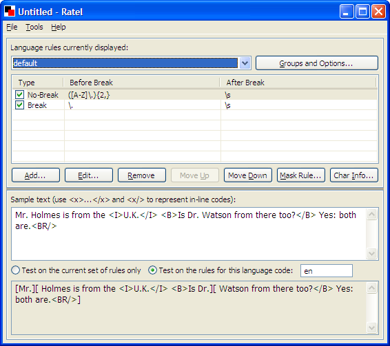

Applications
Okapi Framework
Applications

|
Applications |
Okapi FrameworkApplications |
|
|
The Okapi Framework provides a few ready-to-use applications in addition to its set of libraries and components:
Tikal is a cross-platform command-line tool that performs some simple localization-related tasks such as the extraction and merging of XLIFF documents. Tikal can be used without graphical interface and therefore run anywhere you can run Java.
 |
Rainbow is a cross-platform application to launch different utilities to help you perform various localization-relate tasks. For example: converting the encoding of a file; changing the type of line-breaks; adding or removing Byte-Order-Mark to UTF-8 files; creating simple translation packages and post-processing them; applying XSLT templates to XML documents; doing search and replace on translated text and many more.
 |
Ratel is a cross-platform application to create and maintain segmentation rules. The tool works with the SRX (Segmentation Rules eXchange) format. Segmentations rules are used in several of Okapi's components to break text units into small parts such as sentences. using SRX rules allows to be more interoperable with other sets of tools.
|  |